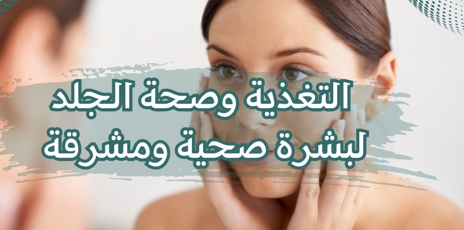

التغذية وصحة الجلد لبشرة صحية ومشرقة
التغذية وصحة الجلد: الأطعمة التي تحافظ على بشرة صحية ومشرقة
تلعب التغذية الدور الحاسم في صحة الجلد. فالأطعمة التي نتناولها يمكن أن تؤثر بشكل كبير على مظهر وصحة بشرتنا. في هذا المقال، سنستعرض بعض الأطعمة التي تساهم في الحفاظ على بشرة صحية ومشرقة، ونوضح كيفية تضمينها في نظامنا الغذائي لتحقيق بشرة جميلة
الأطعمة الغنية بالمضادات الأكسدة
تحتوي الفواكه والخضروات الطازجة على مضادات أكسدة قوية مثل فيتامين C وفيتامين E وبيتاكاروتين والأنثوسيانين. تعمل هذه المضادات الأكسدة على مكافحة الجذور الحرة وتقليل التلف الناتج عن التعرض للعوامل البيئية الضارة. اختر الفواكه والخضروات الملونة مثل البرتقال والتوت والسبانخ والكرفس للحصول على الحد الأقصى من المضادات الأكسدة
الأسماك الدهنية
تحتوي الأسماك الدهنية مثل السلمون والسردين والتونة على نسب عالية من الأحماض الدهنية أوميغا-3. تساهم الأحماض الدهنية الأساسية في ترطيب الجلد وتقوية حاجزه الواقي. كما تحسن مرونة الجلد وتقلل من التهيج والالتهاب. حاول تناول وجبة من الأسماك الدهنية مرتين في الأسبوع للحصول على فوائد الأحماض الدهنية الأساسية.
البذور والمكسرات
تحتوي البذور والمكسرات مثل اللوز والجوز والكاجو على نسب عالية من الدهون الصحية والفيتامينات والمعادن. تعزز هذه العناصر الغذائية صحة الجلد وتحسن مظهره. تحتوي البذور والمكسرات أيضًا على الأحماض الدهنية الأساسية التي تحافظ على ترطيب الجلد وتحميه من الجفاف والتشقق. تناول حفنة صغيرة من البذور والمكسرات يوميًا كوجبة خفيفة أو أضفها إلى السلطات والوجبات الرئيسية.
الزيوت الصحية
تحتوي الزيوت الصحية مثل زيت الزيتون وزيت الكانولا وزيت اللوز على نسب عالية من الأحماض الدهنية الأحادية غير المشبعة والفيتامين E. تعمل هذه الزيوت على ترطيب الجلد وتحسين مرونته. يمكنك استخدام هذه الزيوت في الطهي أو كزيت للتسمير على الجلد.
العنب الأحمر
يحتوي العنب الأحمر على مادة مضادة للأكسدة تعرف بالريسفيراترول، والتي تحافظ على صحة الجلد. يساهم الريسفيراترول في تقليل التهيج والالتهاب في الجلد، ويحميه من الأضرار الناجمة عن التعرض للشمس. يمكنك تناول العنب الأحمر كوجبة خفيفة أو إضافته إلى السلطات.
الماء
لا يمكننا التأكيد بما فيه الكفاية على أهمية شرب الماء لصحة الجلد. يساعد تناول كمية كافية من الماء في ترطيب الجلد وإزالة السموم وتحسين مرونته. حاول شرب ثمانية الي عشرة أكواب من الماء في اليوم وزيادة الكمية إذا كنت تمارس النشاط البدني أو تعيش في بيئة حارة.
الشاي الأخضر
يحتوي الشاي الأخضر على مضادات أكسدة قوية تعرف بالبوليفينولات. تساهم هذه المضادات الأكسدة في حماية الجلد من الأضرار الناجمة عن التعرض للشمس وتحسين مرونته ونضارته. حاول شرب فنجانين إلى ثلاثة أكواب من الشاي الأخضر يوميًا للاستفادة من فوائده الصحية.
الأطعمة الغنية بفيتامين أ
يعد فيتامين أ أحد الفيتامينات الرئيسية لصحة الجلد. يساهم فيتامين أ في تجديد الخلايا الجلدية وتحسين مرونة الجلد. يمكن العثور على فيتامين أ في الطعام من المصادر النباتية مثل الجزر، واليقطين، والبطاطس الحلوة، والسبانخ، وكذلك من المصادر الحيوانية مثل البيض والكبد.